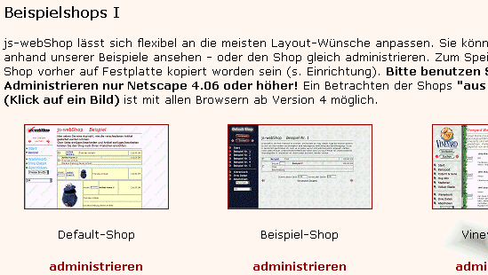
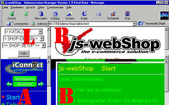
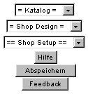
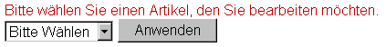
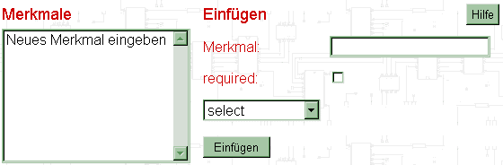
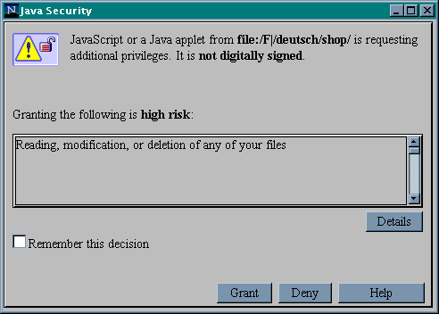
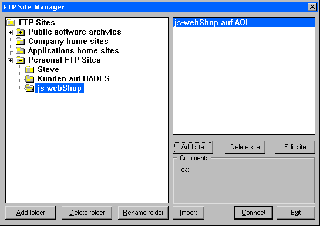

Video
Dieses Feature der Online-Hilfe von js-webShop ist nur in der Vollversion
auf CD-ROM verfügbar. Zu diversen Hilfethemen gibt es Videos im AVI-Format,
die kurz und präzise zeigen, wie's geht.
FAQ
Der
Online-Hilfe liegt eine HTML-Datei mit den häufigsten Fragen und
Problemen bei (FAQ).
Aktuell ist die FAQ auf http://www.js-webShop.com
unter Support verfügbar.
Allgemeines und Warenkorb
Der Shop muss mit Netscape, Version 4.06 oder höher erstellt werden!
Der folgende Abschnitt zeigt die Einrichtung mit der Vollversion 1.0.
Höhere Versionen und DemoShops können hiervon abweichen.
Starten Sie die Datei index.html im
Ordner C:\Programme\deutsch (oder dort, wohin Sie js-webShop kopiert haben).
Diese bietet Ihnen eine Auswahl an vorkonfigurierten Shops, die Sie nach
Belieben verändern können. Klicken Sie auf die Shop-Bilder,
um sich diese Shops anzusehen. Klicken Sie auf ADMINISTRIEREN, um den
ausgewählten Shop zu bearbeiten.

Der 1. Shop (Default Shop) befindet sich im Ordner shop0_default
(Computer zählen immer ab Null!), der 2. Shop (Beispiel-Shop) im
Ordner shop1_beispiel usw. Merken Sie sich, welchen vorkonfigurierten
Shop Sie gewählt haben, sowie den dazugehörigen Speicher-Ordner!
Nachdem Sie die Auswahl getroffen haben, sehen Sie diesen Bildschirm:

Im folgenden wird zur Bezeichnung der vier Rahmen des Bildschirmes die
oben angezeigte Bezeichnung L, R, A oder B
verwendet.
|
Ab
hier gelten folgende Konventionen: Wird auf einen der vier
oben definierten Rahmen Bezug genommen, wird der Rahmen stets mit
seinem fett angezeigten Buchstaben bezeichnet. In der Erklärung
verwendete Bezeichnungen des Rahmens R tauchen so auf, wie
Sie diese in diesem Rahmen sehen, also in der Regel rot
oder als Grafikkästchen wie z.B. Buttons. Namen von Optionen,
die durch Aufruf einer Auswahl in einem Listenfeld (Select) gewählt
werden
können,sind fett gedruckt. Bezeichnungen aus dem Warenkorb
erscheinen grün.
(Farbbangaben beziehen sich nur auf die Online-Hilfe.)
|
Die gesamte Shop-Erstellung steuern Sie in den oberen Fenstern L(inks)
und R(echts). Nach dem Anklicken des Hilfe-Buttons im Rahmen L(inks)
gelangten Sie auf diese Seite. Hier bekommen Sie Hilfe zu allen Fragen,
die bei der Administration Ihres Shops auftauchen. Aus dem Rahmen L
heraus steuern Sie alle Aktionen, die Sie ausführen. Im Rahmen
R(echts) werden diese Aktionen definiert. Im Rahmen R gibt
es stets ebenfalls einen Schalter Hilfe. Wenn Sie diesen anklicken,
bekommen Sie eine kontextabhängige Hilfe direkt zum aktuellen Fenster.
Ihre Kunden sehen auf Ihrem Bildschirm immer nur die Rahmen A
und B. js-webShop erlaubt Ihnen, alle von Ihnen erzeugten Ergebnisse
sofort auf dem Bildschirm zu sehen und bei Bedarf verschiedene Varianten
durchzuspielen. Sind Sie mit dem Ergebnis zufrieden, sollten Sie, wie
oben schon angemerkt, gelegentlich Abspeichern anklicken:
Was gespeichert ist, ist immer wieder abrufbar und auch jederzeit änderbar.
Noch etwas: js-webshob heisst js-webShop, weil er in javascript
geschrieben wurde. Das hat für Sie folgende Auswirkung:
Immer wenn Sie eine Eingabe abschliessen, werden vom Programm bestimmte
Bildschirmausgaben neu berechnet. Bei einigen Formularen ist aber eine
Neuberechnung erst nach Eingabe mehrerer Felder sinnvoll. Aus diesem Grunde
finden Sie in allen Formularen im Rahmen R einen Schalter Eingeben
oder Anwenden.
Wenn Sie diesen anklicken, werden Ihre Eingaben unten im Shop-Bereich
übernommen und angezeigt.
Warnung: Sollten Sie während der Bearbeitung die Grösse des
Bildschirmfensters (des Browsers) oder die Bildschirmauflösung verändern,
reagiert JavaScript unwillig. Es ist ratsam, vorher abzuspeichern.
Shop-Daten / Daten des Shop-Inhabers
| Zuerst
empfehlen wir Ihnen, Ihre eigenen Daten, mit denen Ihr js-webShop
Ihren Kunden entgegentritt, anzulegen.
Klicken
Sie in dieser Liste jetzt auf Shop-Daten unter der Überschrift
==SHOP-SETUP==.
|
 |
Tragen Sie Ihre Daten ein. Die Felder haben folgende Bedeutung:
Name des Shops: Dieser Name steht immer
oben im Rahmen B, damit Ihre Kunden wissen, bei wem sie einkaufen.
Titel des Shops: Der Titel steht immer oben
im (blauen) Fensterrahmen Ihres Browsers. Er entspricht dem <title>-Tag
der Seite.
Die nächsten Felder sieht der Besucher Ihres Shops, wenn er entweder
oben links im Navigationsfenster A auf Ihr Logo oder aber unten
auf der Shop-Seite im Rahmen B auf den Text der Seitenunterschrift
zwischen den beiden Pfeilen klickt. Diese Felder benötigen wohl keine
weitere Erklärung. Rollen Sie mit dem Laufbalken des Rahmens B nach
unten und klicken Sie auf diesen Text. (Diesen Text definieren Sie übrigens
im Fensterchen Seitenunterschrift zwischen
den beiden Pfeilen.)
Name : Dies ist der Name des Shop-Betreibers,
z.B. ABC-GmbH oder Klaus Meier.
eMail : Die eMail-Adresse, unter der Ihre
Kunden Sie per Mausklick erreichen: Der Mausklick auf diese eMail-Adresse
im Betreiberfenster öffnet ein eMail-Fenster, in dem Ihre Adresse
schon voreingetragen ist. Achtung! Wenn Sie mehrere Online-Shops mit
1 Lizenz betreiben (max. dürfen 3 Shops betrieben werden!), dient
die eMail-Adresse der Identifikation des
Lizenzinhabers. Achten Sie in diesem Fall darauf, in allen 3 Shops exakt
dieselbe eMail-Adresse einzugeben!!!
Die Felder Telefon und Fax
sind frei verwendbar. So können sie z.B. in das Feld Telefon
den Text Fax: und in das Feld Fax
Ihre Fax-Nummer eintragen, falls Sie telefonisch nicht belästigt
werden wollen oder auch beide ganz leer lassen. Wenn Sie Ihre Telefon-
und Fax-Nummer angeben, sollten Sie auch Tel.: bzw. Fax:
davorschreiben.
Mit URL zum Verlassen legen Sie fest, auf
welche Seite die Besucher Ihres Shops gelangen, wenn sie oben links im
Navigationsfenster auf die Verlassen-Grafik klicken.
Unter Sonstiges hat Ihre Phantasie freien
Raum: Preisen Sie interessante Dinge an! Spätestens nach einem Klick
auf das Feld Anwenden können Sie Ihre Eingaben überprüfen:
Klicken Sie ganz unten auf der Shop-Seite im Rahmen B auf den Text
zwischen den beiden Pfeilen!
Sie können jederzeit alles ändern und sich die Änderungen
sofort wieder anzeigen lassen.
Absenden: Angaben zum Abschicken von Bestellungen
Klicken Sie in dieser Liste jetzt unten auf Absenden unter der
Überschrift ==SHOP-SETUP==.
Hier tragen
Sie bei Action ein, an wen Bestellungen Ihrer
Kunden von Ihrem js-webShop abgeschickt werden sollen. Dies wird in der
Regel Ihre eMail-Adresse sein, kann aber z.B. auch die Ihres Versands
sein. Das (mailto:) muss unbedingt stehen bleiben!
Sie überschreiben also die dem Doppelpunkt folgende Email-Adresse
einfach mit Ihrer eigenen oder der, an die die Bestellungen geschickt
werden sollen.
Wenn Sie Web-Profi sind, haben Sie noch mehr Möglichkeiten. Haben
Sie z.B. eigene CGI-Scripts, können Sie auch den Pfad auf Ihr spezielles
Bestell-Script mit relativer Pfad-Angabe ( z.B. ../cgi-bin/bestell.pl
) oder aber einen Verweis auf eine eigens dafür erstellte Bestellseite
z.B. im gesicherten Modus (z.B. https://www.meineFirma.de/myshop/bestell.htm)
einrichten. Sie können auch noch eine weitere Variable für ein
Script mittels der Felder Typ, Name
und Value unter dem Punkt Zusätzlicher
Input definieren. Dies ist besonders für Besitzer des Formmail-Scripts
(oder forward.pl) interessant.
Wenn Sie ihre Bestellungen gerne per SSL übertragen würden,
aber kein eigenes CGI-BIN oder keinen eigenen SSL-Server haben, können
Sie den kostenlosen Service von iConnect benutzen. Tragen Sie hierfür
https://secure.js-webShop.com/cgi-bin/forward.pl als Action ein
und für den zusätzlichen Input: hidden, email, IhreMail@IhreDomain.de.
Wir werden dann die Bestellungen an IhreMail@IhreDomain weiterleiten!
Dies ist besonders für Inhaber von kostenlosen Hompages interessant.
Auf http://www.js-webShop.com bekommen Sie die dazu notwendigen Scripts
und Informationen. Wir empfehlen, beim Fenster Encoding
bei der Mail-Variante zu bleiben, wenn Sie nicht genau wissen, was Sie
verursachen!
Eine andere Möglichkeit ist für alle von Interesse: Klicken
Sie ein Häkchen in den Punkt Kundenkommentare,
so erscheint im Warenkorb (und dann natürlich auch im Fenster Abschicken)
je ein weiteres Feld mit der Bezeichnung "Anmerkung" unter jedem Artikel,
das der js-webShop-Kunde ausfüllen kann. Hier können Sie im Prinzip
gleiche Artikel mit gleichem Preis anbieten, die Ihr Kunde aber z.B. um
eine Farbe oder eine Grössenangabe ergänzen kann.
Vorschaltseite
Die Vorschaltseite
Ihres js-webShops (index.htm) hat folgende Funktionen:
- Vorladen
der Shop-Software (also von js-webShop selbst)
- Vorladen
des Sortiments
- Vorladen
der Navigationselemente
- Speicherung
von Keywords (für bessere Auffindbarkeit des Shops in Suchmaschinen)
- Browser-Check
(Benutzer veralteter Browser erhalten spezielle Informationen)
- Vorab-Information
des Kunden über den Shop (vor dem "Betreten")
Zu 1.
js-webShop besteht aus HTML- und JavaScript-Dateien, die alle innerhalb
eines Framesets geladen werden (ausser der Vorschaltseite index.htm selbst).
Der Name des Framesets ist standardmässig auf jwebshop.htm eingestellt.
Sie können diesen Dateinamen ändern, indem Sie den Eintrag im
Feld In welche Datei speichern? anpassen.
Aktivieren Sie die Checkbox Mit Passwort?,
wird auf der Vorschaltseite ein Eingabefeld für das Passwort angezeigt.
Dort muss der Kunde den Namen der Frameset-Datei ohne Dateiendung
eintragen, standardmässig also "jswebshop". Nur bei korrekter
Eingabe gelangt er in den Shop. Ist der Shop nicht mit einem Passwortschutz
versehen, wird der Kunde nach erfolgtem Vorladen oder nach Drücken
des Buttons WEITER zum Frameset weitergeschaltet. Den Dateinamen der Vorschaltseite
können Sie übrigens ebenfalls ändern, und zwar im Feld
Dateiname der Vorschaltseite. Üblich
sind folgende Bezeichnungen für die erste zu ladende Seite eines
Ordners: index.html, index.htm, home.htm oder default.htm. Welcher Dateiname
für Ihre Domain am besten geeignet ist, erfahren Sie von Ihrem Internet
Service Provider.
Zu 2.
bis 3. Ihr js-webShop kann auch ohne Vorladeseite gestartet werden,
indem direkt jswbshop.htm (die Frameset-Datei für den "eigentlichen"
Laden) angelinkt wird. Ohne die Vorlade-Funktionen jedoch sieht Ihr Kunde
vom Shop zunächst wenig und muss auf das Laden der einzelnen Elemente
warten. Die Verwendung der Vorschaltseite wird schon aus diesem Grund
dringend angeraten!.
Zu 4.
Bei der Eingabe neuer Kategorien und Artikel legt js-webShop automatisch
entsprechende Einträge für die Vorschaltseite an. Folgende Einträge
werden gemacht:
- <META
NAME="keywords"> im Dateikopf
- <BODY>
(Liste der Suchbegriffe) im sichtbaren Dateikörper
- Bitte nicht auskommentieren, weil sehr viele Suchmaschinen nur den
BODY auswerten und Suchbegriffe ignorieren, die in HTML-Kommentaren
stehen.
Zu 5.
js-webShop ist kompatibel zu allen Browsern der 4'er Generation von Netscape
und Microsoft. Sollte der Browser des Kunden älter sein, wird auf
der Vorschaltseite ein entsprechender Hinweistext angezeigt. Den Text
können Sie im Feld ... falls zu alter Browser
konfigurieren. Ein weiterer Hinweistext wird angezeigt, wenn im Browser
des Kunden JavaScript abgeschaltet ist. Diesen können Sie im Feld
... falls kein JavaScript aktiv beliebig
einstellen.
Zu 6.
Eine Vorab-Informationen des Kunden darüber, was ihn in Ihrem js-webShop
erwartet, sollte eigentlich eine Selbstverständlichkeit sein. Wer
betritt im Real Life schon einen Laden, wenn er nicht weiss, was
dort verkauft wird? Die einleitenden Sätze können Sie in den
Feldern Erster Text und Zweiter
Text frei festlegen.
Kaufmännisches
Versandarten
Mit einem
Internet-Shop avancieren Sie zum Versandhandel. Damit kommen Kosten für
Verpackung, Porto und Inkasso sowie Verluste durch Fehlversand auf Sie
zu. Das will kalkuliert sein. js-webShop hilft Ihnen dabei.
Überlegen
Sie, wie Ihre Kunden zu Ihren Waren kommen. Sie können Ihre Weinkisten
selbst ausliefern. Das kostet z.B. 30 DM. Wenn Ihr Kunde aber genug kauft,
liefern Sie gern frei Haus. In diesem Fenster können Sie weitere
Versandarten hinzufügen (probieren Sie es aus, in dem Sie die Post
eintragen), die kalkulierten Lieferzuschläge und die Mindestsumme,
ab der Sie frei Haus liefern, eintragen.
Sie können auch Versandarten löschen. Dazu markieren Sie die
zu löschende Versandart, es erscheint dann unten im Rahmen R
der Button Löschen.
js-webShop wird dies in der Rechnungsstellung berücksichtigen. Wollen
Sie einen Zuschlag in jedem Fall erheben, so geben Sie einen sehr hohen
Wert ein, z.B. 20.000,00 DM, den Ihr Kunde nicht erreichen wird.
Kundendaten
Klicken Sie
mit der Maus auf das Feld Ihre Daten im Rahmen A, so erscheint
ein Formular, das Ihre Kunden vor dem Online-Kauf ausfüllen müssen.
Kundendaten dient der Konfiguration der Erfassung des Bestellers,
der Lieferadresse, der Zahlungsweise und weiterer Angaben, die für
bei Rückfragen zur Bestellung wichtig sein können. Überlegen
Sie, welche Angaben für Ihre Zielgruppe notwendig sind. Niemand will
mehr Daten angeben als erforderlich! Sie können bestimmen, welche
Angaben Sie zwingend (farblich markiert, in =SHOP-DESIGN=, Farbe in Kundendaten
wählbar) abfragen und welche Sie Ihren Kunden nur als freiwillige
Angaben zur Verfügung stellen.
Prüfen Sie, welche Angaben Sie zwingend (required)
erforderlich zu machen: Das ist im Interesse Ihrer Kunden. Ohne Lieferadresse
können Sie nicht liefern. Markieren Sie nicht mehr Felder als unbedingt
notwendig mit required. Diese werden vor
Annahme einer Bestellung von js-webShop geprüft, wenn Sie für
diese Felder einen Validierungsmodus eingeben.
Bei der Validierung sind die Optionen keine,
Telefonnummer, Postleitzahl, eMail und URL
erlaubt. Geben Sie bei Bedarf vor allem für neue Adressfelder die
Art der gewünschten Validierung an, wenn Sie Ihnen wichtig ist. Eindeutig
fehlerhafte oder fehlende Angaben bewirken eine diesbezügliche Fehlermeldung
und erzwingen eine Korrektur vor weiterer Bearbeitung der Bestellung,
d.h. vor der Möglichkeit, im Rahmen A erfolgreich auf Abschicken
zu klicken. So bekommen Sie keine Bestellungen, die Sie ohnehin nicht
ausliefern können.
Richten sich z.B. Ihre Angebote eindeutig an private Endkunden, so können
Sie das Kundendatenfeld Firma löschen
und das in js-webShop vorgegebene Feld Ansprechpartner
in Name umbenennen.
Das Feld Löschen sehen
Sie erst, wenn Sie eine der auswählbaren Bezeichnungen durch Klicken
markiert haben. Sie haben folgende Möglichkeiten:
Links neben required ist ein Markier-Schalter
(Checkbox). Klicken Sie mit der Maus darauf, so erscheint ein Häkchen,
klicken Sie noch einmal, ist es wieder weg. Hier markieren Sie die Felder,
die zwingend von Ihrem Kunden ausgefüllt werden müssen.
Validierung
erlaubt, wie oben erklärt, die Auswahl des Typs der Validierung.
Felder ohne die Markierung required
werden nicht überprüft.
Neben Adressfeld können Sie die Bezeichnung
eines Feldes in der Kundendatenliste ändern.
Weiterhin können Sie eine vom Kunden überschreibbare Voreinstellung
für den Inhalt jedes Feldes in der Maske, die beim Anklicken
des Feldes Ihre Daten im Rahmen A angezeigt wird, vorgeben.
Mit Löschen können Sie ein Feld aus der Ansicht
Ihre Daten löschen.
Wenn Sie mit dem Scrollbalken das Fenster Auswählen nach unten scrollen,
erscheint ein Feld neues Adressfeld hinzufügen. Diese neue
Feld erlaubt Ihnen die Abfrage weiterer Daten und erscheint über
dem Feld Zahlungsweise im Rahmen B, wenn im Rahmen A
auf Ihre Daten geklickt wird.
Liefergebiete
Transport kostet. Tragen Sie hier Ihre kalkulierten Lieferzuschläge
ein. Ein Berliner Weinhädler könnte z.B. Berlin und Brandenburg
als Liefergebiet abgrenzen oder einen km-Radius festlegen. Für Auslandslieferungen
haben Sie die Möglichkeit, js-webShop von der Berechnung der Mehrwertsteuer
abzuhalten: Lassen Sie die Checkbox offen, schaltet der Webshop automatisch
in den Nettomodus, falls er vorher Bruttopreise anzeigte.
Zahlungsweisen
Hier legen
Sie fest, auf welche Arten Sie gedenken, zu Ihrem Geld zu kommen. Die
Post kassiert für Nachnahme kräftig ab, auch Kreditkartenfirmen
wollen leben. Bearbeiten Sie die von Ihnen gewünschten Zahlungsweisen.
Text, den Sie in das Feld Meldung einfügen,
wird in der Zeile unter dem Auswahlfeld für die Zahlungsweise in
der Seite Ihre Daten angezeigt. Wenn
Sie eine Zahlungsart (zeitweilig) nicht akzeptieren, müssen Sie diese
nicht löschen, es reicht, sie zu deaktivieren. Ab sofort wird sie
nicht mehr verwendet.
Weiterhin haben Sie die Möglichkeit, für jede Zahlungsweise
entweder alle verwendeten Währungen zu akzeptieren oder nur eine
ausgewählte: Dies ist z.B. bei Nachnahme erforderlich.
Die oberste Zahlungsart wird als Standardwert angezeigt.
Zahlungsweisen/Merkmale
Wenn Sie eine
Zahlungsweise markieren, erscheinen unten im Rahmen R die zwei
Felder Bearbeiten und Löschen. Bearbeiten: Manche
Zahlungsweisen verlangen weitere Angaben, z.B. Kreditkarten den Inhaber,
die Kartennummer und das Ablaufdatum. Alle Felder für weitere Angaben
einer Zahlungsweise sind automatisch required, müssen alsovom Kunden
angegeben werden, wenn er diese Zahlungsweise wählt. Die Angaben
in diesen Feldern werden aus Datenschutzgründen nicht mit abgespeichert.
Währungen
Nun
haben Sie ja keinen Dorfladen mehr: Sie arbeiten im Internet. Damit steht
Ihnen potentiell die Welt als Kunde gegenüber. Vielleicht wollen
Sie ja auch über Landes- und Währungsgrenzen hinaus Ihre Produkte
und Leistungen anbieten. Dem trägt js-webShop durch die Möglichkeit,
mehrere Währungen zu verwenden, Rechnung. Ihr Kunde kann wählen
(unten im Rahmen A), in welcher Währung er zahlen will. Wollen
Sie das nicht, so löschen Sie alle Währungen ausser Ihrer Heimatwährung.
Die können Sie nicht löschen, aber Sie können festlegen,
was für Sie die Heimatwährung ist. Markieren Sie Heimatwährung,
verschwindet das Feld Umrechnungsfaktor,
das Feld Währung wird in Heimatwährung,
das Feld Einfügen in Anwenden umbenannt,
und Sie können Schilling oder Schweizer Franken oder was immer Sie
wollen eintragen.
Für die Umsatzsteuerberechnung ist wichtig, ob Sie Ihren Shop im
EU-Bereich oder nicht betreiben. Dies sollten Sie also ganz am Anfang
festlegen. Alle Eurowährungen sind rechtlich einwandfrei eingebunden:
Bitte ändern Sie hier ohne zwingenden Grund NICHTS! Wollen Sie eine
weitere EURO-Währung, die Sie aus irgendeinem Grund aus der Liste
entfernt hatten, wieder einfügen,tun Sie dies über den Schalter
Euro-Währungen einfügen. Sie können aus der jetzt
links auftauchenden Länderliste das Land auswählen und wieder
aktivieren.
Nicht-EURO-Währungen können Sie über den Punkt "Neue Währung
eingeben" ganz unten im Fenster mit den verwendeten Währungen eingeben.
Klicken Sie eine der vorhandenen Währungen an, erscheint neben Einfügen ein
Feld Löschen, Sie können eine ungeliebte Währung
löschen oder aber den Umrechnungsfaktor
an die aktuelle Börsenlage oder Ihren persönlichen Umrechnungskurs
anpassen. Mit neue Währung hinzufügen können Sie
Ihren potentiellen Kundenkreis erweitern. Alle eingestellten Währungen
sind im Währungsfenster unter Abschicken
wählbar, sofort nach Anwählen werden alle Preise in der eingestellten
Währung angezeigt.
Mehrwertsteuer
Mehrwertsteuern
sind programmtechnisch problematisch. An der Tankstelle kostet ein Liter
Benzin 156,9 Pf., Telekom macht die Pfennige noch kleiner. Wollen Sie
mit Brutto-Preisen arbeiten, ergeben sich gebrochene Pfennigpreise bei
den Nettopreisen und umgekehrt. Eine ordnungsgemässe Preisauszeichnung
ist aber Pflicht. js-webShop gibt Ihnen bei der Einrichtung Ihres Shops
die Wahl, Ihre Preise in Netto- oder Brutto-Beträgen einzugeben.
Wir empfehlen folgendes:
Besteht Ihre Zielgruppe überwiegend aus Endverbrauchern, sollten
Sie die Preise als Brutto-Preise eingeben, verkaufen Sie an gewerbliche
Kunden, sind Netto-Preise sinnvoll. Der Grund: Ein Artikel zu 99,00 DM
kostet 85,34 DM netto. Eigentlich ja 85,34482759 DM, aber schreiben Sie
das mal in Ihre Preisliste!
Verkaufen Sie also einem Kunden 10 Artikel auf Nettopreisbasis, so hat
er 989,94 DM zu bezahlen. Er hat aber 10 Artikel a 99 DM bestellt und
Sie kassieren über Bankeinzug: Deutsche Gründlichkeit, wo bist
Du geblieben? Wie schön waren doch 15% MwSt!
Auf jeden Fall ist js-webShop auf die nächste Erhöhung der Mehrwertsteuer
vorbereitet, auch der Schweizer und Italiener kann mit js-webShop arbeiten.
Sie können Ihre landesspezifische Mehrwertsteuer selbst definieren,
MwSt löschen und ändern.
Entscheiden Sie sich aber für ein Prinzip Ihrer Preiseingabe!
Ihre js-webShop-Kunden können unten im Rahmen A selbst entscheiden,
ob Sie Ihre Bestellung auf der Basis von Netto- oder Brutto-Preisen abschicken.
js-webShop schreibt keine Rechnungen: Die legen Sie Ihren Warensendungen
bei. Die Bestellung sagt Ihnen, wie der Kunde seine Rechnung haben will.
Ihr Kunde kann seine Preise im Warenkorb so sehen, wie er das will.
Layout
Schriften
So, wie Sie
Ihre Grafiken frei gestalten können, haben Sie auch viele Möglichkeiten
der Gestaltung Ihrer Schriften. Aktivieren Sie im Rahmen L den
Punkt Schriften.
Markieren Sie
mit der Maus im Fenster Auswählen eine
der Schriften, so sehen Sie rechts unter Ändern
im Feld Schriftart eine Schriftenfamilie ausgewählt. Voreingestellt
sind die serifenlosen Schriften. Wir empfehlen Ihnen, dabei zu bleiben.
Klicken Sie auf das Listenfeld (Select) rechts im Feld Grösse,
können Sie die Grösse der links ausgewählten Schrift verändern.
Mit einem Klick auf eine der Farben in der Farbauswahl
legen Sie die Farbe der ausgewählten Schrift fest.
In den unteren Rahmen können Sie sofort sehen, wie die gewählte
Farbe, Grösse und eventuell Schriftfamilie zur Hintergrund-Grafik
oder -Farbe passt.
Hierbei steht
- Fliesstext- für alles in den Tabellen/Kästchen in
Rahmen B
- Navigation- für die im Rahmen A angezeigten Seiten
- Navigation Sonderseiten - für Start, Warenkorb, Ihre
Daten und Abschicken im Rahmen A
- Seitenüberschrift - die Rahmen B oben
- Einleitungstext - für Texte, die zwischen der Seitenüberschrift
und den Produkt-Kästchen/-Tabellen im Rahmen B stehen sowie
den Text ganz unten im Rahmen B
- Abschicken - für die Texte in den Rahmen des Warenkorbes
und der Kunden-Daten
Grafiken
Sie werden erstaunt sein, in welch weiten Grenzen js-webShop Ihnen erlaubt,
das Erscheinungsbild Ihres Shops selbst zu definieren. Alle voreingestellten
Grafiken sind von Ihnen selbst definierbar!
Dazu dient der nächste Punkt Grafiken in ==SHOP-SETUP==.
Das Feld Verzeichnis durchsuchen fügt keine Namen von
Grafik-Dateien in die vorhandenen Auswahlfelder ein: Es listet nur im
Rahmen B die vorhandenen Dateien in allen Verzeichnissen auf. Klicken
Sie einen Dateinamen in der Liste in einem Verzeichnis an, sehen Sie in
Rahmen B eine Darstellung der Grafik. So können Sie sicher
sein, dass Sie auch die von Ihnen gewünschte Grafik an der richtigen
Stelle eintragen. Der relative Pfadname, ausgehend vom Speicherort Ihres
Shops muss hier ebenfalls angegeben werden. Beispiel: Haben Sie im Verzeichnis
shop0_default ein Unterverzeichnis Ihrer Grafiken namens images
angelegt, so sollte der Eintrag lauten: images/meinegrafik.jpg.
Natürlich sind hier in jedem Fall die Pfade auf Ihrem Web-Server
oder Ihrer virtuellen Domain gemeint, und nicht die auf Ihrer Festplatte!
(In der Regel besteht aber kein Unterschied zwischen beiden Speicherformen,
also keine Bange!)
Jetzt zu den konkreten Angaben:
Logo: Falls Sie oder Ihre Firma ein eigenes
Logo verwenden, sollte dies natürlich ganz oben erscheinen. Geben
Sie hier den Namen der Datei mit Ihrem Logo inklusive des eben erklärten
relativen Pfades ein.
js-webShop verwendet
sogenannte Seiten (oder Kategorien) zur Gliederung Ihres
Angebotes. Angenommen, Sie verkaufen Trinkgläser: Sie könnten
dann Ihre Angebote nach den Kategorien (Katalogseiten) Biergläser,
Weingläser, Sektgläser, Saftgläser etc. untergliedern.
Diese Seiten stehen im Rahmen A zwischen der Seite Start
und der Seite Warenkorb. Stets haben Sie als erste Seite Start,
danach können Sie beliebig viele Seiten einfügen. Im Rahmen
A sehen Sie vor diesen Seiten eine Grafik, in der Voreinstellung
einen grünen Ball, aber bei der jeweils aktiven Seite, also der,
die gerade angewählt wurde,einen roten Ball.
Angewählte
Seite:
Geben Sie hier die Grafik an, die im Rahmen A die angewählte
Seite markiert.
Nicht angewählte Seite: Geben Sie hier
die Grafik an, die im Rahmen A alle anderen Seiten markiert.
Hintergrundbild links: Hier geben Sie ein
Hintergrundbild für Rahmen A an. (Weiter unten, bei Farben,
lernen Sie Hintergrundfarben vergeben).
Hintergrundbild rechts: Hier geben sie ein
Hintergrundbild für Rahmen B an.
Verlassen: Geben Sie hier die Grafik an,
die im Rahmen A unter dem Logo steht. Mit diesem Punkt verlässt
der Besucher seinen Warenkorb.
Suchen: Geben Sie hier die Grafik an, mit
der ein Besucher im Shop suchen kann. Sie wird unmittelbar unter Verlassen
positioniert.
Pfeile: Geben Sie hier die Grafik an, die
im Rahmen A links und rechts vom Suchen-Feld sowie im Rahmen B
stehen. Sie können, wie überall, Ihre eigenen Symbole verwenden.
gif für die Startseite: Geben Sie hier
eine Grafik an, die im Rahmen A den Eintrag Start mit zugehöriger
linker Grafik ersetzt (exakt 165 Pixel breit), falls die Startseite nicht
angewählt ist.
Startseite angewählt: Geben Sie hier
eine Grafik an, die im Rahmen A den Eintrag Start mit zugehöriger
linker Grafik ersetzt (exakt 165 Pixel breit), falls die Startseite angewählt
ist. Analog gilt dies für Warenkorb, Kundendaten,
Abschicken.
Farben
Jetzt wird's
bunt! Sie können praktisch alle Farben, die auf Ihren js-webShop-Seiten
auftauchen, selbst definieren. Sie haben hoffentlich Ihre bisherigen Eingaben
schon abgespeichert, wenn nicht, sollten Sie das tun. Bevor Sie anfangen,
Farben zu definieren, sollten Sie wenigstens eine Seite und ein oder zwei
Artikel angelegt haben. Falls Sie das noch nicht getan haben, empfehlen
wir Ihnen, jetzt erst einmal eine Seite anzulegen oder eine der Demo-Seiten,
die mit js-webShop mitgeliefert wurden, durch Anklicken zu öffnen.
Gehen Sie dann im Rahmen L in =SHOP-DESIGN== auf Farben der
Tabellen.
Hier sehen Sie nicht alle Möglichkeiten im Auswählen-Fenster,
dazu benötigen Sie den Scrollbalken.
Wir werden alle Optionen der Reihe nach beschreiben. Sie müssen stets
erst im Auswahlfenster eine Option wählen, danach können Sie
die von Ihnen gewünschte Farbe auswählen. Wählen Sie eine
Farbe, bevor Sie eine Option gewählt haben, macht Sie ein kleines
Fenster darauf aufmerksam. Weiterhin müssen Sie wissen, dass die
Hintergrundfarbe nicht sichtbar ist, wenn Sie für die betreffende
Seite bereits bei Grafik oder bei Seite
einrichten eine Hintergrundgrafik ausgewählt haben. Sehen
Sie also im Hintergrund eines Objekts bereits grafische Elemente, so deutet
das auf eine aktive Hintergrundgrafik hin: Diese überdeckt die Hintergrundfarbe.
Die ausgewählte
Farbe wird Ihnen zusätzlich in der üblichen Schreibweise angezeigt
(hexadezimal, z.B. #FF0000 für Rot). Sie können einen anderen
Farbwert auswählen, indem Sie
- aus den
216 sicheren Browser-Farben der Farbpalette wählen (diese Farben
werden in jedem Browser unter normalen Umständen korrekt angezeigt)
oder
- eine selbstdefinierte
Farbe eintragen (z.B. #A0B977).
Hintergrund
rechts: Definiert die Hintergrundfarbe des Rahmens B. Diese
Einstellung ist gültig sowohl für die von Ihnen angelegten Seiten
als auch für die Sonderseiten Start, Warenkorb, Ihre Daten und Abschicken.
LINKS, LINKS visited, LINKS aktiv setzt die Farben der Hyperlinks.
Hier wartet aber JavaScript mit der Besonderheit auf, von JavaScript verwendete
Links als visited zu betrachten. Unter Umständen finden Sie aber,
dass auf einem bestimmten, von Ihnen so gewünschten Hintergrund der
Link verschwindet, da er die Farbe des Backgrounds hat. In solchem Fall
soll Ihnen hiermit die Möglichkeit angeboten werden, den Link bei
Beibehaltung Ihrer gewünschten Hintergrundfarbe doch sichtbar zu
machen.
Hintergrundfarbe links setzt, wie Sie schon vermuten, den Hintergrund
des Rahmen A. Es ist übrigens nicht unbedingt verkehrt, die
gleiche Farbe für den Punkt
Navigation Seiten, der erlaubt, den Hintergrund hinter den von
Ihnen erzeugten Seiten zu definieren, und den Punkt
Navigation oben, der den Basis-Hintergrund des Rahmens A oben hinter
dem Logo und den Feldern Verlassen und Suchen überschreibt,
zu verwenden.
Artikeltabellen setzt den Hintergrund innerhalb der einzelnen Produkt-Tabellen
oder -Kästchen.
Überschrift der Seiten verändert nicht die Schrift, wohl
aber den Hintergrund der Seitenüberschriften und der von Ihnen eventuell
eingegebenen Kopftexte für die einzelnen Seiten.
Navigation unten auf der Seite definiert den Hintergrund am unteren
Ende des Rahmens B, in dem die Summen, die Navigationssymbole zurück
und weiter sowie der Aufruf Ihrer Firmendaten stehen.
Hintergrund Kundendaten definiert die Hintergrundfarbe derjenigen
Felder in der Maske Ihre Daten, deren
Ausfüllung dem Besteller freigestellt ist oder in denen keine Daten
eingegeben werden müssen, sowie die Produktfelder im Warenkorb sowie
den Warenkorb in der Absenden-Seite.
Sie sollten aber die Pflichtfelder mit
Abschicken required farblich hervorheben. Das sind die Felder,
die bei der Konfiguration der Seite Kundendaten mit einem Häkchen
als Pflichtfelder (required) markiert wurden. Diese Felder werden logisch
abgeprüft und bei Nichtausfüllung oder eindeutig falscher Ausfüllung
vor dem Absenden noch einmal zu Verbesserung
vorgelegt.
Kundendaten Überschriften definiert die Hintergrundfarben
der Tabellenzeilen mit Überschriften auf der Warenkorb-, Ihre Daten-
und Absenden-Seite.
Rahmen
js-webShop
wäre unvollkommen, wenn es Ihnen nicht die volle Kontrolle auch über
die Rahmen der Felder Ihres Shops anbieten würde. Klicken Sie im
Rahmen L auf Rahmen der Tabellen.
Wenn Sie Rahmen verwenden wollen, so werden sie bei grosser
Breite im 3-D-Modus dargestellt. Die Farbgestaltung wird automatisch vom
jeweiligen Hintergrund abgeleitet, auf dem sie sich befinden. Überschrift
und Produkte bedarf hier keiner Erklärung, mit Navigation
ist der Bereich ganz unten im Rahmen B gemeint, mit Linke Seite
ist der Rahmen A gemeint. Sie können auch hier die einzelnen
Seiten und Ihre zugehörigen Grafiken, falls vorhanden, voneinander
absetzen. Tragen Sie im Feld Rahmendicke die gewünschte Breite
Ihrer Rahmen in Pixeln ein, experimentieren Sie ruhig. Zu erwähnen
ist noch, dass das Löschen der Zahl im Feld Border die Rahmen nicht
auf Null setzt; dazu müssen Sie wirklich eine 0 eintippen und auf
Anwenden klicken.
Unten können Sie noch die Breite der Tabellen im Rahmen B
Ihres Shops festlegen. Die meisten im Internet surfenden benutzen einen
Bildschirm mit der Auflösung 800x600 Pixel, der Trend geht zu 1024x768,
aber auch 640x480 Pixel Bildschirmauflösung sind noch anzutreffen.
Sie selbst werden wohl am besten Ihre Zielgruppe kennen: Gestalten Sie
Ihren Shop entsprechend Ihrer Einschätzung Ihrer Zielgruppe. Sie
sollten aber in jedem Fall Ihren Shop in diesen drei Auflösungen
einmal ansehen, bevor Sie ihn ins Internet stellen. Man staunt gelegentlich
sehr, wie andere die Seiten auf Ihren Bildschirmen sehen.
Expertenmodus
Experten
sind Menschen, die auf die Zur-Kenntnisnahme von Hilfetexten verzichten.
:-)
Der Expertenmodus
wird in einer Folgeversion ausgebaut und wird dann auch für "normal
Sterbliche" handhabbar sein.
Einrichten des Katalogs
Katalogseiten /
Kategorien einfügen
Zur Terminologie
in js-webShop: Es gibt vier Sonderseiten: Start, Warenkorb,
Ihre Daten und Absenden. Diese können Sie nicht
löschen, nur ihr Aussehen verändern und einige andere Dinge
beeinflussen.
Sie können zwischen Start und Abschicken Ihre Seiten
einfügen oder löschen. Ihre Angebote präsentieren Sie immer
auf Ihren (Katalog-)Seiten. Bevor Sie also Artikel anlegen können,
müssen Sie eine (Katalog-)Seite erzeugen oder eine vorhandene auswählen.
Diese Seiten können Sie natürlich auch ändern, dazu im
nächsten Absatz. Beim Anlegen neuer Seiten hilft Ihnen die Eingabemaske,
den Sie mit Seite einfügen unter =Katalog= im Rahmen
L aufrufen.
Zuerst weisen Sie der Seite einen Namen zu, unter dem sie dann links im
Rahmen A aufrufbar ist. Das sollte ein Oberbegriff für die
auf dieser Seite angebotenen Artikel sein, etwa Rotwein beim Weinhändler
oder Plüschtiere beim Spielwarenladen. Jetzt können Sie
diese Seite gestalten. Die einfachste Methode ist der Aufruf einer schon
vorhandenen HTML-Seite. Möchten Sie z.B. sich selbst oder Ihre Firma
oder Ihr Credo vor den Eintritt Ihrer Besucher stellen, so könne
Sie z.B. auf eine schon vorhandene gelungene Seite zurückgreifen
und einfach deren URL (das ist die Adresse, mit der sie im Internet aufgerufen
wird) angeben. Damit sind alle anderen Felder dieses Rahmens gegenstandslos,
klicken Sie auf Einfügen und fertig. Sie sollten aber
dabei beachten, dass diese Seite neben dem Rahmen A angezeigt wird,
also unter Umständen infolge beschränkten Platzes anders aussieht,
als Sie sie kennen.
Haben Sie beim Erstellen einer neuen Seite eine URL einer anderen, vorhandenen
Webseite angegeben, so ist auf dieser auch nur diese zu sehen. Sie können
zwar auf dieser Seite wie auf jeder anderen von Ihnen erzeugten Seite
Artikel anlegen, aber niemand sieht sie: Eine einfache Methode, um z.B.
eine Gruppe zeitweilig nicht lieferbarer Artikel vor den Besuchern Ihres
Shops befristet zu verbergen, ohne alles erst löschen und dann wieder
neu eingeben zu müssen.
Auf Seiten, die Ihre Artikel feil halten sollen, ist also solch eine Angabe
nicht sinnvoll. Machen Sie was draus!
Wenn Sie aber Artikel anbieten wollen, können Sie der Seite einen
ganz speziellen Hintergrund zuordnen. Erinnern Sie sich? Im Punkt Grafiken
konnten Sie bereits dem Rahmen B für alle Seiten einen Hintergrund
zuordnen. Wenn Sie noch einen speziellen Hintergrund für eben diese
Seite zuordnen wollen, haben Sie hier die Möglichkeit dazu. Ein vorhandener
Hintergrund überschreibt eine ausgewählte Hintergrundfarbe,
ein spezieller Hintergrund überschreibt einen allgemeinen Hintergrund.
Den gewünschten Hintergrund müssen Sie allerdings mindestens
mit einem relativen Pfadnamen oder mit einem absoluten Pfadnamen angeben,
damit js-webShop ihn auch finden kann. Am einfachsten legen Sie in Ihrem
Shop-Verzeichnis Unterverzeichnisse mit Grafikdateien an, die Sie verwenden
wollen. Damit das Finden der Dateien nicht zu schwer ist, stellt Ihnen
js-webShop das Feld Verzeichnis durchsuchen zur Verfügung.
Klicken Sie dies an, so wird Ihnen im Rahmen B das Verzeichnis,
in dem Sie gerade Ihren Shop erstellen, mit allen Dateien und Unterverzeichnissen
angezeigt. So können Sie sich leichter an Verzeichnispfade und Dateinamen
erinnern. Apropos erinnern: Erinnern Sie sich an die Hilfe zu Grafiken?
Dort konnten Sie für den Rahmen A Grafiken auswählen,
die links neben den Seiten stehen und Ihrem Shop-Besucher helfen zu erkennen,
auf welcher Seite er sich gerade befindet (Angewählte
Seite und Nicht angewählte Seite).
Wie bei den Hintergründen überschreibt eine spezielle Einstellung
die allgemeine: Wenn Sie in Navigationsbild
eine Grafik angeben, so überschreibt diese sowohl den Seitennamen
als auch die kleine Grafik vor dem Seitennamen und erzeugt ein Bild über
die Breite des Rahmens A (165 Pixel). Haben Sie in Navigationsbild
eine Grafik eingegeben, und nur dann, können Sie in Nav.
-Bild angewählt noch eine zweite Grafik angeben, die die im
Navigationsbild angegebene Grafik überschreibt, wenn diese Seite
angewählt wurde. Dabei passt sich die Grösse der angewählten
Grafik der der ursprünglichen an: Damit kann man interessante Verzerrungen
erzeugen. Unter Nav. -Bild angewählt
finden Sie ein Feld Einleitung Top zur Texteingabe: Dieses Feld entscheidet
darüber, ob Ihre Seite als Überschrift den im Feld Name
des Shops im Unterpunkt Shop-Daten im Rahmen L angegebenen
Namen und rechts daneben den Titel der Seite anzeigt: Lassen sie
das Einleitung leer, so beginnen Ihre Artikel unmittelbar am oberen
Rand der Seite. Fügen Sie (im allereinfachsten Fall) mindestens ein
Leerzeichen dort ein, so erscheint die Seitenüberschrift. In diesem
- wie in allen Feldern - kann mann man natürlich auch HTML-CODE eingeben!
Ihre Ändrungen werden sofort sichtbar, wenn Sie auf Einfügen
klicken. Wenn Sie das Feld Mit Summen? aktivieren, so werden auf
der Seite ganz unten die Summen der Einkäufe auf dieser Seite und
im gesamten Warenkorb angezeigt.
Katalogseiten / Kategorien
bearbeiten
Die Option
Seite bearbeiten entspricht der Option Seite einfügen,
alle Felder funktionieren, wie oben beschrieben, mit zwei Änderungen:
Damit js-webShop weiss, welche Seite Sie bearbeiten wollen, müssen
Sie die zu ändernde Seite vorher im Rahmen A anklicken. Weiterhin
gibt es hier neben dem Feld Einfügen noch ein Feld Löschen,
so wird die Seite mit allen Artikeln gelöscht. Damit Ihnen
das nicht aus Versehen passiert, hat js-webShop noch ein Warnfenster
vorgeschaltet. Bestätigen Sie das Löschen der Seite, so werden
auch alle Artikel dieser Seite gelöscht.
Katalogseiten importieren
Damit Sie vorhandene
strukturierte Daten verwenden können, bietet js-webShop ab
Version 1.5 ein einfach zu bedienendes Modul zum Import von TAB-separierten
Daten. Dieses ist nahtlos in den Administration Manager integriert und
wird in 2 Schritten bedient:
- ==SHOP-SETUP==
Import-Maske
Hier stellen Sie die Spalten- bzw. Feldanordnung für Ihre Tabellenkalkulation
bzw. Datenbank ein.
- ==KATALOG==
Seite importieren
Hier werden die Daten aus Ihrer Tabellenkalkulation bzw. Datenbank eingelesen.
Zu 1. ==SHOP-SETUP==
Import-Maske
Stellen Sie
ein, welches Layout die Artikel der zu erzeugenden Katalogseite haben
sollen. Legen Sie durch Anklicken fest, welche Spalten bzw. Felder importiert
werden sollen (incl. evtl. Produktmerkmale). Entscheiden Sie, ob die Artikel
dieser Kataloganseite beim Import angefügt werden sollen oder ob
evtl. vorhandene Artikel durch den Import ersetzt werden sollen. Klicken
Sie anschliessend auf MASKE ERSTELLEN.
Die erzeugte
Maske kann z.B. wie folgt aussehen:
repl 1 checkbox true true 0 -1
Bezeichnung Kurzbeschreibung Bild Stückpreis
Diese beiden
ersten Zeilen dürfen Sie in Tabellenkalkulation oder Datenbank keinesfalls
löschen! Hier sind Import-Informationen gespeichert (1. Zeile) sowie
Überschriften bzw. Feldnamen (2. Zeile). Der Inhalt des Textfensters
im Administration Manager lässt sich per Zwischenablage direkt in
Excel übertragen (Achtung: Alles kopieren, bis zum letzten TAB!).
Dort (bleiben
wir beim Beispiel Excel) können Sie nun ab der 3. Zeile die Artikel
einfügen. Danach sieht die Tabelle z.B. wie folgt aus:
repl 1 checkbox true true 0 -1
Bezeichnung Kurzbeschreibung Bild Stückpreis
HP Deskjet Tintenstrahler, 600 dpi gif/hp1.gif 310,8
Canon Bubblejet Tintenstrahler, 600 dpi gif/can1.gif 295,5
Epson Stylus Tintenstrahler, 600 dpi gif/stylus1.gif 325
Danach sind
wir dann schon fast beim zweiten Schritt. Vorher noch soviel zu Schritt
1:
- Sie können
die Reihenfolge der erzeugten Felder in der Maske nicht selbst festlegen.
Durch eine entsprechende Datenbank-Abfrage (z.B. in Access) bzw. Verschieben
von Spalten (z.B. in Excel) können Sie Ihre bereits strukturierten
Daten aber so anordnen, dass js-webShop sie problemlos einlesen kann.
Sie müssen der Abfrage oder Tabelle dann nur noch die beiden ersten
Zeilen hinzufügen.
- Im Administration
Manager brauchen Sie die Import-Maske nur 1 x pro Tabelle erstellen.
Daher befindet sich diese auch nicht unter =KATALOG=, sondern unter
==SHOP-SETUP==. Wer ändert schon ständig die Datenstruktur
seines Sortiments?
Zu 2. ==KATALOG==
Seite importieren
Am einfachsten
ist der Import aus einer Tabellenkalkulation heraus. Wir bleiben hier
beim Beispiel Excel.
- Markieren
Sie den Bereich in Ihrer Tabelle, der die beiden Überschriftszeilen
und die Sortimentsdaten enthält, und kopieren Sie ihn in die Zwischenablage
(Achtung: Alles kopieren, bis zur letzten Tabellenzelle!).
- Wählen
Sie ==KATALOG== Seite importieren.
- Fügen
Sie die Zwischenablage in das Textfeld ein und wählen Sie IMPORTIEREN.
Falls Sie Artikel überschreiben eingestellt haben, fragt
js-webShop Sie, ob die vorhandenen Artikel dieser Seite überschrieben
werden sollen. Antworten Sie mit Ja, ist die Katalogseite fertig
und wird im Rahmen B angezeigt.
Artikel einfügen
Vorbereitung
Jetzt wird es
so richtig interessant. Die Artikel sind ja der eigentliche Gegenstand
Ihres Shops. Wenn Sie den obenstehenden Teil der Hilfe schon zur Kenntnis
genommen haben, und das sollten Sie vor dem Anlegen neuer Artikel tun,
kennen Sie schon die Vielfalt der Gestaltungsmöglichkeiten, die Ihnen
js-webShop bietet. Bei den Artikeln haben Sie eher noch mehr Möglichkeiten.
Sie sollten sich also die Zeit nehmen und gründlich experimentieren,
bevor Sie sich für Ihr Artikel-Layout entscheiden. Die WYSIWYG(What
You See Is What You Get)-Fähigkeit von js-webShop zeigt Ihnen jederzeit,
wie die von Ihnen gewählten Einstellungen denn nun wirklich aussehen.
js-webShop stellt Ihnen eine Anzahl vorkonfigurierter Layouts zur Verfügung.
Sollten Ihnen diese nicht ausreichen oder Sie möchten ganz spezielle
Wünsche realisieren, wenden Sie sich per eMail an service@js-webShop.de.
Weiterhin können Sie sich an diese Adresse wenden, wenn Sie an der
Profi-Version von js-webShop mit der Möglichkeit, Artikeldatenbanken
direkt in ein einmal ausgewähltes Artikel-Layout zu übernehmen,
interessiert sind.
Wie fügen sie nun Artikel ein? Natürlich sollten Sie das Einfügen
von Artikel gut vorbereiten. Sie benötigen erst einmal eine Liste
mit all Ihren Artikeln. Diese sollten einen kurzen Bezeichnung,
meist einen etwas beschreibenderen Namen und eine Kurzbeschreibung des
Artikels besitzen, der Netto- oder der Brutto-Preis sollten kalkuliert
sein. Wenn Sie sich noch nicht für einen Netto- oder Brutto-Shop
entschieden haben, machen Sie dies jetzt! Unter Mwst-Sätze können
Sie einstellen, ob Sie die Preise Ihrer Artikel brutto oder netto eingeben
wollen. Falls Sie mit Bildern Ihrer Produkte arbeiten wollen, sollten
Sie die zugehörigen Bilddateien in einem neuen Verzeichnis im Shop-Ordner
anlegen, z.B. C:\Programme\js-webShop\images. Den Namen dieses Verzeichnisses
gefolgt von einem Schrägstrich / müssen Sie später bei
der Angabe eines Bildes jedesmal mitangeben, siehe auch relative Pfadangaben
(images/bildname.gif). Sind Ihre Produkte erklärungsbedürftig
oder erklärungswürdig oder Sie wollen einfach die Vorzüge
und Eigenschaften Ihrer Artikel eingehend schildern, haben Sie die Möglichkeit,
zusätzliche HTML-Datei anzulegen. Diese Datei wird aus der dem Kunden
sichtbaren Beschreibung angelinkt. Diese Dateien sollten ebenfalls in
einem Verzeichnis im Shop-Ordner liegen. Haben Sie diese Vorbereitungen
abgeschlossen und eine neue Seite für die Präsentation Ihrer
Produkte oder der einer bestimmten Produktkatekorie angelegt, können
Sie jetzt mit der Einrichtung dieser Seite durch Anlegen neuer Artikel
beginnen.
Einfügen neuer Artikel
Zuerst klicken
Sie im Rahmen A unten links auf die Seite, auf der Sie den neuen
Artikel präsentieren wollen. Damit weiss js-webShop, auf welcher
Ihrer Katalogseiten der Artikel eingefügt werden soll. Wenn Sie bis
jetzt alles richtig angelegt haben, ist diese Seite durch die entsprechende,
bei der Einrichtung der Seiten festgelegte Grafik markiert. Gehen Sie
jetzt mit der Maus im Rahmen L auf den Punkt Artikel einfügen.
Falls Sie noch keine Seite ausgewählt hatten, sehen Sie im Rahmen
R oben rechts den Hinweis: Bitte wählen
Sie erst eine Seite, auf der der Artikel angezeigt werden soll.
Das erste Feld oben rechts erlaubt Ihnen in der Standardversion die Auswahl
von drei Grund-Layouts: Tabellen, Kästchen und Grosses
Bild.
Tabellen dienen zur einzeiligen Eingabe von Artikeln. Dieses Layout
erlaubt die übersichtliche Angabe einer maximalen Anzahl von Artikeln
je Bildschirm, dafür ist die auf den Seiten angebotene Menge an Informationen
über diese Artikel beschränkt. In der einfachsten Form besteht
eine Tabelle aus einer einfachen Zeile mit vier Feldern: Vorn die im nächsten
Feld oben links voreingestellte Auswahl Checkbox, danach der Name
des Artikels, etwas mehr Information über diesen Artikel aus dem
Feld Titel, sowie ein Feld zur Anzeige des
Stückpreises. Diese Form taugt zum Beispiel
zum Angebot von vielen Artikeln auf einer Seite. Das Titelfeld
wird leer angezeigt, wenn keine Angaben gemacht wurden. Haben Sie dem
Artikel eine Beschreibung hinzugefügt,
mutiert der Name des Produktes zum Link:
wird er vom Besucher Ihrer Seiten angeklickt, so erscheint ein neues Fenster,
in dem diese Beschreibung zu sehen ist und das ausserdem die Möglichkeit
bietet, durch Klicken auf Zurück wieder auf die vorherige
Seite zurückzukehren. Wollen Sie ein Bild des Artikels hinzufügen,
so geben Sie den Pfad von der Position der Datei admin.htm aus im Feld
Bild an: Also z.B. img/bild.gif, wenn Sie
Ihre Bilder in einem Unterverzeichnis namens img in
Ihrem shop-Verzeichnis untergebracht haben. Danach hat die Tabelle fünf
Felder, nach dem Namen des Artikels wird eine verkleinerte Darstellung
des Bildes gezeigt (immer 60 Pixel breit). Sie sollten nur dafür
sorgen, dass Ihre Bilder so leicht wie möglich werden, d.h. durch
eine geeignete Form der Komprimierung oder Farbreduzierung auf eine möglichst
geringe Dateigrösse kommen. Wenn Ihr Artikel entweder a)sehr ansehnlich
ist oder b)weiterer Beschreibung bedarf, können Sie im Fall a) eine
grosse Darstellung des Artikels oder im Fall b) eine eigens dafür
erstellte HTML-Seite im Feld URL angeben.
In diesem Fall mutiert das kleine Bild hinter dem Namen zum Link, was
Ihr Kunde am Rahmen um das Bild erkennt. Wird jetzt das Bild angeklickt,
so erscheint das im Feld URL eingetragene
Objekt im Rahmen B. Diese Darstellung ist übrigens für
Ihre Kunden ebenfalls erreichbar, wenn sie in dem Fenster, das ein Mausklick
auf den Namen des Artikels hervorzaubert, auf "Wollen Sie mehr wissen?"
klicken.
Die für den Artikel geltende Mehrwertsteuer wählen Sie im Feld
MwSt Satz aus, auf das Feld Grundpreis
wird später eingegangen. Tragen Sie den Einzelpreis im Feld Stückpreis
ein. Je nachdem, ob Sie sich beim ==SHOP-SETUP== für Brutto- oder
Netto-Preise entschieden hatten, tragen Sie hier den entsprechenden Preis
ein. Haben Sie Ihren Artikel neu eingegeben, also mindestens Name,
Stückpreis und MwSt
Satz eingetragen, klicken Sie auf Eingeben. Ihr Artikel
erscheint unten im Rahmen B als neuer Artikel.
Es ist für Sie wahrscheinlich am besten, wenn Sie drei Demo-Artikel
eingeben und danach den Punkt Artikel bearbeiten unter =KATALOG=
auswählen. Der Bildschirm im Rahmen R für Artikel
bearbeiten gleicht nach erfolgter Auswahl eines Artikels bis auf das
Feld Löschen dem, den Sie von Artikel einfügen
her schon kennen. Geben Sie bitte drei Artikel mit der Voreinstellung Tabellen
ein, wenn Sie unseren Beispielen folgen wollen.
Artikel bearbeiten
Wollen sie
einen Artikel bearbeiten, markieren Sie erst rechts im Rahmen A
die Seite, auf der der Artikel steht.
Wenn Sie das Feld Artikel bearbeiten unter =KATALOG= auswählen,
sehen Sie:

Hier wählen Sie den zu bearbeitenden Artikel und und
erhalten einen Bildschirm, der bis auf das Feld Löschen rechts
neben Eingeben der Funktion Artikel eingeben gleicht.
Haben Sie übrigens vergessen, einem neuen Artikel einen Namen zu
geben, so haben Sie im Feld Bitte Wählen die Möglichkeit,
ein Leerfeld anzuwählen, um den Namen hinzufügen zu können.
Artikel stehen immer in der Reihenfolge ihrer Eingabe.
Jetzt geht es also an das Durchspielen der verschiedenen Artikel-Layouts
auf Ihren Seiten. Schauen Sie sich ruhig einmal verschiedene Layouts in
den mitgelieferten Demo-Seiten an. Sie werden schnell ein Gefühl
für die angemessene Form Ihrer Artikel entwickeln.
Artikel-Layouts
Tabellen
sind die Form, die Ihnen erlaubt, viele Artikel übersichtlich auf
einem Bildschirm zu präsentieren. Das geht zu Lasten der enthaltenen
Informationen. Die Informationen, die je Artikel eingegeben werden, sind
aber unabhängig von Ihrem gewählten Layout und also auch von
Ihren Kunden einsehbar. Er benötigt also entweder Mausklicks, um
sich auf einer sehr langen Seite, die dadurch an Übersichtlichkeit
verliert, umzusehen, oder aber um weitere Informationen aus einer übersichtlichen,
aber knappen Darstellung abzurufen.
- Wollen Sie
also z.B. mit Ihrem Getränkehandel und Lieferdienst Bier, Cola
und den Kleinen Feigling anbieten, erübrigt sich im Prinzip für
den Kunden die Kenntnisnahme der Beschreibung der Artikel, obwohl Sie
diese durchaus anbieten. Sie bieten Jever, Becks oder Erdinger Weissbier,
der Kunde klickt und fertig. ==> Sie wählen Tabellen
- Verkaufen
Sie ausgewählte hochwertige Whisky-Sorten, schaut der Kenner zwar
vielleicht auch nicht nach, wohl aber der Gelegenheitskäufer. Es
ist also angebracht, schon beim ersten Anblick der Artikelliste nähere
Informationen anzubieten. ==> Sie wählen Kästchen
- Verkaufen
Sie textile Kunstblumen, will der Kunde natürlich deutlich sehen,
wie die denn aussehen. Ein grosses Bild ist unverzichtbar. ==> Sie wählen
Grosses Bild
Jedes dieser Layouts ist in weiten Grenzen konfigurierbar.
Layout Tabelle
Tabellen besitzen mindestens vier, höchstens sieben Felder
nebeneinander. Im Feld können Sie wählen zwischen
Checkbox, Bild und Menge. Checkbox und Bild sind
äquivalent: Bild meint einen kleinen Einkaufswagen, der genau wie
die Checkbox als Schalter fungiert. Einmal anklicken, und ein Artikel
ist in den Warenkorb selektiert, noch mal anklicken, und die Bestellung
ist deaktiviert. Aktivieren Sie rechts neben diesem Feld Mit
Mengeneingabe, so aktiviert oder deaktiviert Checkbox bzw. der
lustige kleine Einkaufswagen die Bestellung für die eingegebene Anzahl
der Artikel. Schöpfen Sie die Möglichkeiten aus, so stehen in
den sieben Feldern nebeneinander erst eine Checkbox oder das Bild dafür,
dann die Mengeneingabe, dann der Name
des Artikels, gefolgt vom Bild, anschliessend
der Titel, dann der Einzel-Preis
und am Ende die Summe für diese Zeile. Haben Sie eine Beschreibung
eingegeben, so ist diese mit einem Klick auf den Namen des Artikels
erreichbar, haben Sie eine URL eigegeben,
so erreichen Sie diese durch einen Klick auf das Bild des Artikels oder
aus der Anzeige der Beschreibung heraus. Klicken Sie in o.a. Feld auf
Menge, so ist js-webShop intelligent genug, die nebenstehende Mengeneingabe
zu deaktivieren: Ihre Tabelle hat nur noch 6 Felder. Löschen Sie
Angaben in Ihrer Artikelbeschreibung einzeln und beobachten Sie, was passiert!
Jetzt haben Sie einen Artikel in einer Tabelle mit
sieben Feldern und möchten, dass das Bild des Artikels doch etwas
grösser erscheint.
Sie wählen wiederum den Artikel an und wechseln
in auf Kästchen. Sie sehen nach Klick auf Eingeben das
Bild viel grösser. Ganz links daneben drei Zeilen. Die obere kennen
Sie aus der Tabelle, aber der Name des Artikels ist kein Link mehr,
also nicht mehr unterstrichen und hervorgehoben. Der Titel bekommt
ein grösseres Feld, die Beschreibung ist sofort zu sehen.
Das Bild des Artikels ist nach wie vor anklickbar und zeigt die URL, die
z.B. das gleiche Bild in "richtig gross" sein kann.
Layout
Kästchen
Gehen Sie auf Artikel bearbeiten, wählen
Sie den gleichen Artikel wieder und ändern Sie jetzt
Ihre Auswahl im Feld auf Menge: Die Sache wird übersichtlicher.
Löschen Sie die Beschreibung,
verschwindet diese samt ihrem Kästchen. Was Sie nicht löschen
dürfen, ist der Name:
Der soll ja in der Bestellung auftauchen. Versuchen Sie mal, den Namen
auch zu löschen: Sofort wird das Artikellayout an der Stelle, wo
der Name stand, durchsichtig und der Hintergrund scheint durch. Minimalkonfiguration
Kästchen: Checkbox oder Bild, Name, Preis.
Noch kleiner als Tabelle!
Layout
Grosses Bild
Sie haben also jetzt auf Ihrer Seite das Layout Kästchen
in Form einer Tabelle mit drei Feldern. Ändern
Sie jetzt in auf Grosses Bild:
Die Felder verschieben sich. Das Layout ist ja auch für grosse Bilder
gedacht. Geben Sie also wieder die Referenz zu Ihrem Bild in Bild
ein.
Wenn Sie jetzt OOOPS! sagen, hatten Sie vielleicht ein Bild ausgewählt,
das ursprünglich etwa 75 x 225 Pixel gross war: Es ist jetzt drei
Bildschirme hoch und sieht entsetzlich aus?! js-webShop muss ja mit dem
vorhandenen Platz nach irgendeinem Schema umgehen: Bilder werden massstabgerecht
für die Layouts angepasst.
Bei Grosses Bild ist die voreingestellte Breite 70% der Tabellenbreite,
bei Kästchen 150 Pixel, bei Tabellen 60 Pixel. Die
Höhe ergibt sich aus dem Seitenverhältnis in der Vorlage.
Fügen Sie nun nacheinander wieder Informationen in beliebigen Kombinationen
ein und sehen Sie, was passiert.
Viel Spass beim Gestalten Ihrer Angebote mit js-webShop!
Produktmerkmale
Ab Version 1.5 verwaltet js-webShop Produktmerkmale. Damit können
Sie einem Artikel (z.B. einem T-Shirt) verschiedene Merkmale zuweisen
(z.B. Grösse und Farbe). Um ein Merkmal einzurichten, klicken Sie
auf =SHOP SETUP= und Merkmale. Danach sehen Sie folgende Eingabemaske:

Jetzt können
Sie im Feld
Merkmal den
Merkmalsnamen eingeben. Bleiben wir erst einmal beim Beispiel Grösse.
Bei der Checkbox neben required
können
Sie festlegen, ob beim Bestellen eines Artikels das Merkmal angegeben
werden muss oder nicht. Im Feld select
haben
Sie die Auswahl über die Darstellungsform der Merkmale. Auch dies
lassen Sie erst einmal wie voreingestellt. Klicken Sie dann auf Einfügen.
Nachdem Sie
jetzt das Merkmal "Grösse" angelegt haben, erscheint der
Button Weiter bearbeiten. Klicken Sie auf
diesen, und Sie erhalten eine weitere Eingabemaske, in der Sie jetzt die
verschiedenen Grössen definieren können, z.B. S, L, X, XL und
XXL. Grössen, die Sie hier definiert haben, stehen dann jedem Artikel
zur Verfügung.
Um jetzt endlich
einmal zu sehen, was das bringt, legen Sie einfach einen Artikel an, oder
bearbeiten einen bestehenden Artikel (=Katalog= und Artikel einfügen
bzw. Artikel bearbeiten). Sie werden feststellen, dass am unteren Ende
der Eingabemaske eine Checkbox sowie ein
Link mit dem Namen des Merkmals eingefügt
wurden. Wenn Sie jetzt auf die Checkbox neben
dem Namen des Merkmals klicken und danach auf Eingeben,
sehen Sie, dass beim Artikel eine Auswahlmöglichkeit hinzugefügt
wurde. Um jetzt verschiedene Preise für diese Merkmale anzugeben,
bearbeiten wir diesen Artikel erneut (=Katalog= und Artikel bearbeiten).
Klicken Sie jetzt auf den Link mit dem Namen
des Merkmals (in unserem Beispiel auf "Grösse"). Sie können
nun den verschiedenen Grössen verschiedene Preise zuordnen. Sie können
ausserdem weitere Grössen einrichten, die dann nur für diesen
Artikel gelten. Sobald Sie für eine Grösse einen Preis angegeben
haben, wählen Sie diese im Artikel doch einfach mal aus. Wie Sie
sehen, wird der Preis zum Stückpreis addiert.
Wichtige
Hinweise zu den Produktmerkmalen:
- Es gibt
maximal genau ein preisbestimmendes Merkmal. D.h. bei Auswahl einer
Merkmalsausprägung wird der Stückpreis des Artikels durch
den Merkmalspreis ersetzt.
Beispiel: Stückpreis Armbanduhr "Standard" 150 EUR,
bei Auswahl der Merkmalsausprägung "Platin" 500 EUR.
- Alle weiteren
Produktmerkmale können mit Preisen versehen werden. Diese werden
zum Stückpreis des Artikels addiert.
Beispiel: Stückpreis Armbanduhr "Standard" 150 EUR,
mit Lederarmband zzgl. 10 EUR.
Speichern und Übertragen
des Shops
Abspeichern des
Shops auf Ihrer Festplatte
So speichern Sie
Ihren Shop
Klicken Sie
im Rahmen L auf ABSPEICHERN. Im Rahmen R erscheinen 2 Möglichkeiten:
- Pfad zum
Speichern des Shops eingeben. Tragen Sie hier nur dann etwas ein, wenn
Sie nicht im Standard-Pfad speichern wollen (und wenn Sie wissen, was
Sie tun!). Mit BROWSE können Sie sich bis zum Speicherpfad
durchklicken. Klicken Sie im Ziel-Verzeichnis eine beliebige Datei an;
js-webShop extrahiert aus den Angaben den korrekten Speicherpfad.
- Sie übernehmen
den Standard-Pfad (empfohlen). Der Shop wird genau an der Stelle abgespeichert,
von wo Sie ihn geöffnet haben. Wir empfehlen Ihnen, alles so zu
lassen, wie es Ihnen angeboten wird, denn Sie können Ihren Shop
ja auch anschliessend in Ihrem Datei-Manager (z.B. Windows-Explorer)
verschieben oder kopieren.
Bestätigen
Sie nun im Rahmen R durch Klick auf ABSPEICHERN. Jetzt dauert
es einen Moment, denn der Java Privilege Manager von Netscape wird gestartet.
Das nächste Fenster weist Sie auf die Sicherheitsrisiken hin, die
Sie eingehen, wenn Sie einem JavaScript-Programm erlauben, Daten auf Ihre
Festplatte zu speichern:

Da es sich um js-webShop handelt und nicht um irgendeine Ihnen unbekannte
Anwendung, können Sie problemlos die additional privileges
gewähren. Klicken Sie dazu auf GRANT.
Wenn alles beim Speichern geklappt hat, sehen Sie jetzt "Abspeichern
beendet. Wenn Sie den Shop testen wollen, klicken Sie bitte hier. Testen!"
Wenn Sie stattdessen den Verzeichnisinhalt sehen (z.B. "Directory
Listing of /C/deutsch/shop0_default"), hat etwas nicht funktioniert
und Ihre Eingaben / Änderungen sind nicht gespeichert. Mögliche
Ursachen:
- Der CDROM-Schreibschutz der auf die Festplatte kopierten Dateien wurde
nicht entfernt.
Abhilfe: Unter Windows-Systemen können Sie im Explorer den Schreibschutz
entfernen, u.zw. wie folgt. Bis zum Shop-Verzeichnis / Shop-Ordner durchklicken.
Rechter Mausklick auf Shop-Ordner, Eigenschaften wählen, Schreibschutz
wegklicken.
- Sie arbeiten auf einem (Netz-) Laufwerk, auf dem Sie keine Schreibberechtigung
haben. In diesem Falle speichern Sie woandershin oder wenden Sie sich
an Ihren Netzwerk-Administrator.
- Sie haben den js-webShop Administration Manager nicht über das
lokale Dateisystem, sondern über HTTP gestartet (z.B. von einem
Intranet-Server aus). Über HTTP gibt es für JavaScript keinerlei
Möglichkeit, Dateien zu speichern (Sicherheitsgründe). Abhilfe:
Laden Sie den Administration Manager über FILE: (z.B. C:\Programme\js-webShop),
dazu klicken Sie in der Menüleiste auf Datei und dann Datei
öffnen.
Übertragen ins Internet oder auf CD-ROM
So übertragen Sie Ihren Shop ins Internet
Etliche Online-Dienste bieten eigene Tools (Programme) an, mit denen
Dateien ins weltweite Netz geladen werden können. Solche Dateien
können Homepages sein, aber auch js-webShop. AOL z.B. bietet MyPlace
an. Komfortabler geht's allerdings mit einem "echten" FTP-Programm.
Wenn Sie wissen, wie ein FTP-Programm
für Ihren Account konfiguriert werden muss, klicken Sie hier (Einführung
in FTP überspringen).
FTP-Programme sind extrem einfach einzurichten und zu bedienen. Es gibt
für praktisch jedes FTP-Programm immer 4 Arbeitsschritte:
- FTP-Programm installieren
- Profil anlegen (Verbindungsprofil)
- Internet-Verbindung herstellen
- Dateien vom oder ins Internet übertragen
Im Ordner TOOLS
auf der CDROM finden Sie für Windows-Systeme
einige FTP-Programme, die im wesentlichen alle ähnlich zu
handhaben sind. Für einen AOL-Account zeigen wir einmal auf, wie
Sie Ihren Shop ins Internet übertragen.
Cute FTP meldet sich beim Programmstart mit dem FTP Site Manager.
Wenn dort schon ein Verbindungsprofil angelegt wurde, brauchen Sie nur
noch auf CONNECT zu klicken:
